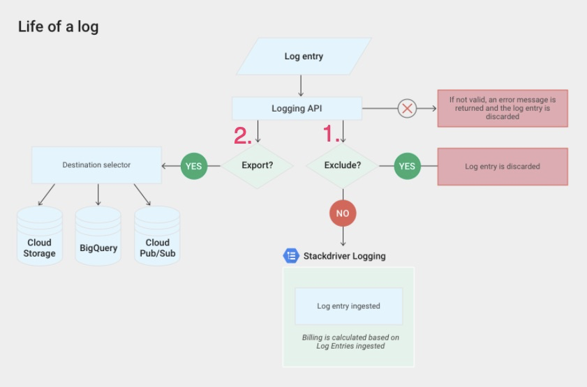
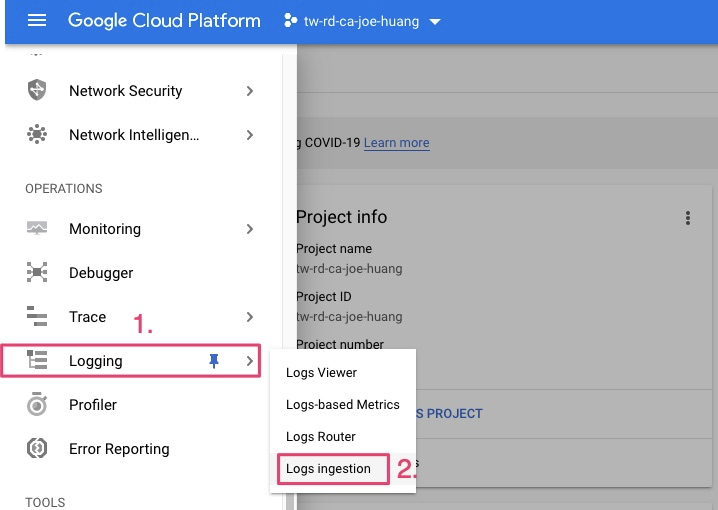
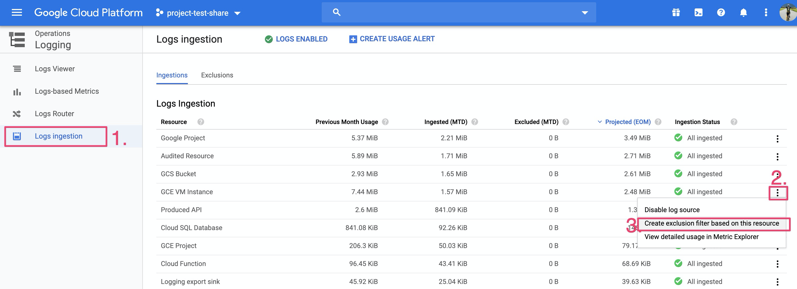
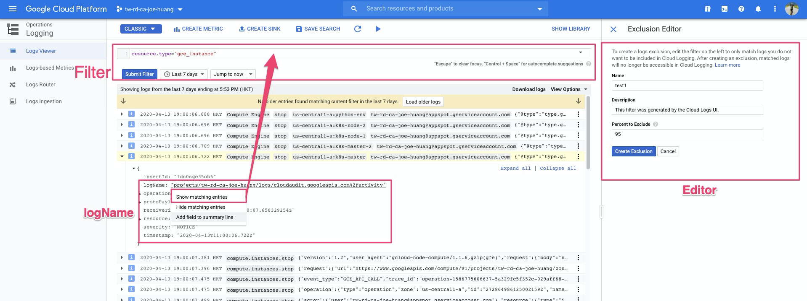
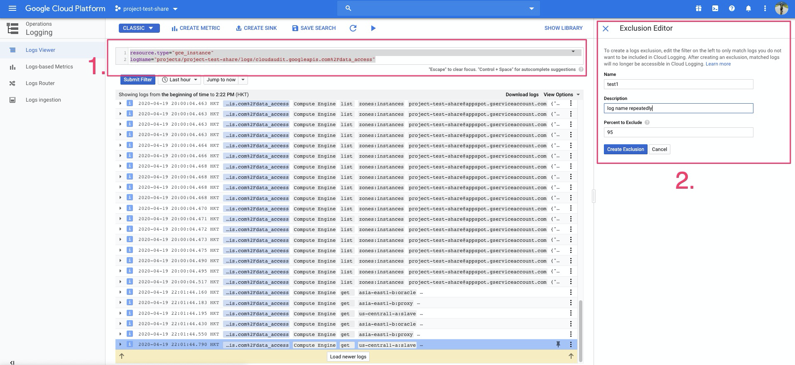
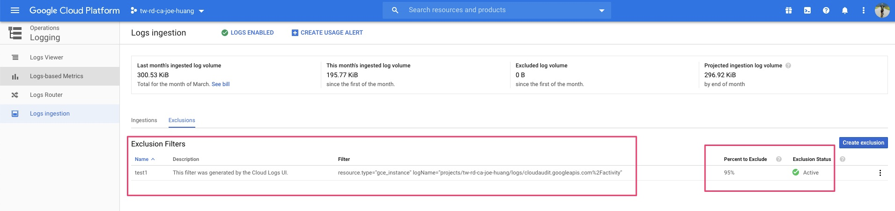
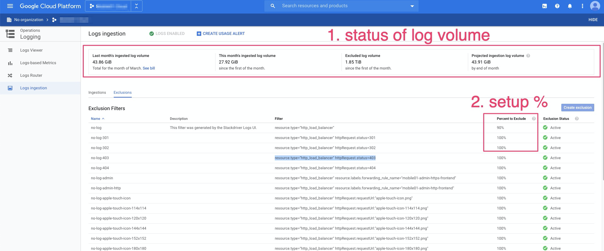

[GCP] Stackdriver省錢好簡單: 使用Logs Exclusions省成本 | Stackdriver: Adopting Logs Exclusions to Save Costs
▌前言
很多GCP 用戶對於Stackdriver是又愛又恨，它的圖形分析簡單，又與GCP深度結合，在操作上實在方便，但是它的計費方式包含log volume。簡單說就是存放雲上的log空間是要計價的，因此有優化成本的方式，來達到節費的目的，最可以讓你越來越愛它
依照文件“Reduce your logs usage”[1] 降低logging成本方法有二項：
- 方法一：設定Logs exclusions[2]，以減少日誌記錄的數量。
- 方法二：設定Logs exports[3]，使用sink 輸出至gcs, pub/sub，再配合第三方軟體 ex.Elastic Search 達成log analysis
▌什麼是Log Exclusion？
Exclusions 目的是減少日誌存入logging，使費用降低。ex. 當有過量log同時存入logging時，透過設定Logs exclusions 擷取特定log 內容並設定保存的百分比，以達到節費的目的。Logs exclusions 可以建立過濾器(filter)，只對某些log record進行採樣，以便只顯示一部分採樣的訊息出現在logging viewer。
完整log生命週期，說明方法一、二的路徑，exclude的應用可以二種，保留部份訊息或全丟棄
- exclude 可以保留部份訊息，可以設定95%，將會隨機丟棄95% log ，僅保留5%的訊息
- exclude 可以完全丟棄訊息，可以設定100%，因此不會保留任何訊息在logging
圖1. life of log

▌Logs Exclusions 操作
首先建立filter篩選log內容，再設定保留的百分比
以VM instance 為例
- 先鎖定一筆VM instance log ，並擷取”Log name”內容，完整操作如下
1 | resource.type="gce_instance" |
2 | logName="projects/project-test-share/logs/cloudaudit.googleapis.com%2Fdata_access" |
step1. 進入Logs ingestion畫面

step2. 選擇服務
以”GCE VM instance”為例，點選”Create exclusion filter based on this resource”

step3. 編輯篩選條件
- 請於”Filter”方框內，增加篩選條件
- 條件內容，可以使用 “show matching entries”功能，直接將條件帶入Filter
以instance “logName”為例，並指定LogName

確認LogName已加入Filter篩選
Editor 請設定名稱與丟棄的%

step4. 設定完Editor，請回Log injection頁面
確認exclusion policy，已正常加入exclusion

另外提供設定多筆exclusion範例
其中一筆設定保留Load balance服務 10%
其它皆100% 丟棄
可以看到上方status，Excluded log volume確認過濾掉log

Log 該保留百分比？
根據GCP Exclude by percentage [4] 建議保留5%，因此設定Percent to Exclude為95%，Filtor將會隨機去除95%的log內容，僅將5%內容存入Cloud Logging中的日誌，另外我們建議可彈性設定1 ~ 5%。
▌結果
最後，排除的日誌record不會計入Logging volume，進而達到節費目的。
另外參考圖1, export方法二，可以導出排除的日誌以保留Logging之外的log analysis軟體
Reference
[1] https://cloud.google.com/stackdriver/pricing#reduce-logs-use
[2] https://cloud.google.com/logging/docs/exclusions
[3] https://cloud.google.com/logging/docs/export/configure_export_v2
[4] https://cloud.google.com/solutions/stackdriver-cost-optimization#logging_cost_controls